You can run all packages at once, in order to avoid interruptions. You’d need to install some of them if you still didn’t, using install.packages(“name_of_the_package”) command.
library(DataExplorer) # EDA
library(tidyverse) # for everything good in R ;)
library(SmartEDA) # EDA
library(dlookr) # EDA
library(funModeling) # EDA
library(ISLR) # for the Wage dataset
library(ggstatsplot) # publication ready visualizations with statistical details
library(flextable) # beautifying tables
library(summarytools) # EDA
library(psych) # psychological research: descr. stats, FA, PCA etc.
library(skimr) # summary stats
library(gtsummary) # publication ready summary tables
library(moments) # skewness, kurtosis and related tests
library(ggpubr) # publication ready data visualization in R
library(PerformanceAnalytics) # econometrics for performance and risk analysis
library(fastStat) # well :) you've guessed it
library(performance) # Assessment of Regression Models Performance (for outliers here)
I love R, because it is reach and generous. Having around 17.000 packages allows me to solve any data science problem. However, such abundance can be overwhelming, especially because one task can be accomplished by different functions from different packages with different levels of effectiveness. So, looking for the most effective way can be very time consuming! Thus, I hope that this collection of functions will save you some time. And if you know better functions or packages for EDA, please let me know in the comments below and let us together create here the one-stop solution for Deep EDA in R.
Creating visualised reports of the whole dataset with only one function!
The most effective way to explore the data quick is the creation of automated reports. We’ll have a look at three packages which are able to do this. DataExplorer package creates the best report in my opinion. SmartEDA and dlookr packages are also good choices. Three functions you are going to see in a moment will cover all the basics of EDA in a few seconds.
If you are more of a visual person, you can watch the R demo of automated data exploration here:
{DataExplorer}
{DataExplorer} report will deliver basic info about your dataset, like number of rows and columns, number of categorical and numeric variables, number of missing values and number of complete rows. It will also show you a missing data profile, where percentages of missing values in every variable are displayed. It plots the histograms and Quantile-Quantile plots for every numeric variable and bar-plots for every categorical variable. It finally explores the combinations of different variables, by conducting correlation analysis, principal component analysis, box and even scatter plots.
If one of the variables is of a particular importance for you, you can specify it and get much richer report. Simply execute the code below and see it for yourself.
library(DataExplorer) # for exploratory data analysis
library(tidyverse) # for data, data wrangling and visualization
# report without a response variable
create_report(diamonds)
# report with a response variable
create_report(diamonds, y = "price")
{SmartEDA}
In addition to the similar results, {SmartEDA} report also delivers descriptive statistics for every numeric variable with all important metrics you could need, like number of negative values, number of zeros, mean, median, standard deviation, IQR, bunch of different quantiles and even the number of outliers. {SmartEDA} also displays the density of every numeric variables instead of histograms. And while {DataExplorer} package can visualize density too, density plots are not part of the automated {DataExplorer} report.
What I found particularly useful in {SmartEDA} report is that it provides the code responsible for a particular result. For instance, if you don’t need the whole report, but wanna see only descriptive statistics, you just copy the code, change the name of your dataset and get the same table you see in the report without looking for such code in the documentation. It saves time! Moreover, in {SmartEDA} package, you can give your report a name and save it in the directory of your choice.
{dlookr}
One of the most amazing features of {dlookr} package is that {dlookr} perfectly collaborates with {tidyverse} packages, like {dplyr} and {ggplot2}. This elevates the output of {dlookr} on another level. We’ll see some examples here. Another advantage of {dlookr} package is that you can choose the output to be a PDF (by default) or HTML files. Moreover, it also separates between three kinds of reports: diagnose report, EDA report and transformation report.
The diagnose report delivers:
- the number of missing and unique values,
- counts, proportions and ranks of categorical variables,
- descriptive stats, number of zeros, negative values and number of outliers of numeric variables and finally
- visualizes every numeric variables with and without outliers
library(dlookr) # for exploratory data analysis
# report without a response variable
diagnose_report(diamonds) # pdf by default
Similarly to the {DataExplorer} report, we can get much richer EDA report from {dlookr} by specifying the target variable. Let’s export the EDA report in the HTML format and look at it. This EDA report delivers:
- visual normality tests of all numerical variables with a histogram and a Quantile-Quantile plot plus two histograms of the most common transformations of data, namely log- and square-root. This is quite useful, because we can immediately see whether we need to transform the data and which type of transformation is more useful;
- this report also provides correlation coefficients and plots for all possible combinations of numeric variable, then
- since our target variable is categorical, EDA report provides descriptive statistics for every category of our target variable and every numeric variable, and contingency tables for every category of our target variable and every categorical variables;
- it also visualizes the distribution of every other variable vs. the target variables using box-plots and density plots, with and without outliers.
# report with a response variable and some dplyr sintax
diamonds %>%
eda_report(
target = cut,
output_format = "html",
output_file = "EDA_diamonds.html")
Finally the transformation report, which is my absolute favorite:
- imputes missing values with multiple methods simultaneously, so that you can compare the distribution of the data after different imputation techniques and choose the best imputation method for every particular variable,
- it also imputes outliers with different methods,
- resolve skewness of the data with different methods and
- is even able to categorize numeric variables, if needed.
# example with missing values
transformation_report(airquality, target = Temp)
# example with outliers
transformation_report(diamonds, target = price)
Big Picture of your data
Big reports might be overwhelming though, and we often need only a particular aspect of data exploration. Fortunately, you can get any part of the big report separately. For instance, the basic description for airquality dataset can be reached via functions introduce() and plot_intro() from {DataExplorer} package.
{DataExplorer}
[,1]
rows 153
columns 6
discrete_columns 0
continuous_columns 6
all_missing_columns 0
total_missing_values 44
complete_rows 111
total_observations 918
memory_usage 6376plot_intro(airquality)

{funModeling}
{funModeling} package provides a similar function with some useful metrics, like number of zeros, NAs or unique values for every variable.
library(funModeling) # EDA
status(airquality) %>% flextable()
variable | q_zeros | p_zeros | q_na | p_na | q_inf | p_inf | type | unique |
Ozone | 0 | 0 | 37 | 0.24183007 | 0 | 0 | integer | 67 |
Solar.R | 0 | 0 | 7 | 0.04575163 | 0 | 0 | integer | 117 |
Wind | 0 | 0 | 0 | 0.00000000 | 0 | 0 | numeric | 31 |
Temp | 0 | 0 | 0 | 0.00000000 | 0 | 0 | integer | 40 |
Month | 0 | 0 | 0 | 0.00000000 | 0 | 0 | integer | 5 |
Day | 0 | 0 | 0 | 0.00000000 | 0 | 0 | integer | 31 |
If you are tired of reading, you can watch the rest of this post in action as a video:
Explore categorical (discrete) variables
{DataExplorer}
Simple bar plots with frequency distribution of all categorical variables are already quite useful, because they provide a quick overview about the meaningfulness of the categorization, and whether there are some typing mistakes in the data. {DataExplorer} package provides a simple plot_bar() function which does just that. However, plotting a target discrete variable by another discrete variable is even more useful. It is some sort of a visual frequency table (see the second plot below). For this use the by = argument and give it the second categorical variable.

{SmartEDA}
ExpCatViz function from {SmartEDA} package also plots each categorical variable with a bar plot, but displays proportions instead of counts.
And here we finally come to the DEEP part of EDA. The plot below nearly “scrims” the hypothesis that education level is strongly associated with the job. Namely, the more educated we get, the more likely we’ll end up working with information (e.g. with data ;) and the less likely we’ll end up working in a factory. However, without a proper statistical test and a p-value this hypothesis can not be tested and remains … well … a speculation.
library(ISLR) # for the Wage dataset
ExpCatViz(
Wage %>%
select(education, jobclass),
target="education")
[[1]]
{ggstatsplot}
Fortunately, the ggbarstats() function from {ggstatsplot} package does all the above in one line of code and even goes one step further. Namely:
- it counts and calculates percentages for every category,
- it visualizes the “frequency table” in the form of stacked bars and
- provides numerous statistical details (including p-value) in addition to visualization, which allows us to make a conclusion or inference already in the exploratory phase of the project!
library(ggstatsplot) # visualization with statistical details
ggbarstats(
data = Wage,
x = jobclass,
y = education,
label = "both")
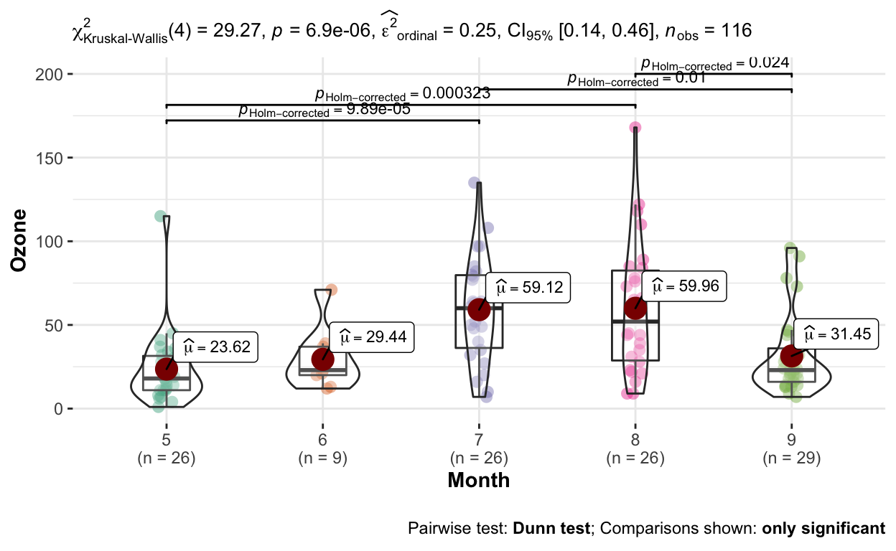
Explore numeric variables with descriptive statistics
{dlookr}
Descriptive statistics is usually needed for either a whole numeric variable, or for a numeric variable separated in groups of some categorical variable, like control & treatment. Three functions from {dlookr} package, namely describe(), univar_numeric() and diagnose_numeric() do totally nail it. Be careful with the describe() function though, because it also exists in {Hmisc} and {psych} packages too. Thus, in order to avoid the confusion, simply write dlookr:: in front of describe() function, which then provides the most common descriptive stats, like counts, number o missing values, mean, standard deviation, standard error of the mean, IQR, skewness, kurtosis and 17 quantiles.
variable | n | na | mean | sd | se_mean | IQR | skewness | kurtosis | p00 | p01 | p05 | p10 | p20 | p25 | p30 | p40 | p50 | p60 | p70 | p75 | p80 | p90 | p95 | p99 | p100 |
Sepal.Length | 150 | 0 | 5.843333 | 0.8280661 | 0.06761132 | 1.3 | 0.3149110 | -0.552064 | 4.3 | 4.400 | 4.600 | 4.8 | 5.0 | 5.1 | 5.27 | 5.60 | 5.80 | 6.10 | 6.3 | 6.4 | 6.52 | 6.90 | 7.255 | 7.700 | 7.9 |
Sepal.Width | 150 | 0 | 3.057333 | 0.4358663 | 0.03558833 | 0.5 | 0.3189657 | 0.228249 | 2.0 | 2.200 | 2.345 | 2.5 | 2.7 | 2.8 | 2.80 | 3.00 | 3.00 | 3.10 | 3.2 | 3.3 | 3.40 | 3.61 | 3.800 | 4.151 | 4.4 |
Petal.Length | 150 | 0 | 3.758000 | 1.7652982 | 0.14413600 | 3.5 | -0.2748842 | -1.402103 | 1.0 | 1.149 | 1.300 | 1.4 | 1.5 | 1.6 | 1.70 | 3.90 | 4.35 | 4.64 | 5.0 | 5.1 | 5.32 | 5.80 | 6.100 | 6.700 | 6.9 |
Petal.Width | 150 | 0 | 1.199333 | 0.7622377 | 0.06223645 | 1.5 | -0.1029667 | -1.340604 | 0.1 | 0.100 | 0.200 | 0.2 | 0.2 | 0.3 | 0.40 | 1.16 | 1.30 | 1.50 | 1.8 | 1.8 | 1.90 | 2.20 | 2.300 | 2.500 | 2.5 |
Here, we can also see how useful can be collaboration of {dlookr} with {tidyverse} packages, like {dplyr} and its group_by() function!, which calculates descriptive statistics per group. And if you don’t need such a monstrous table, but only want to have the median() instead of 17 quantiles, use univar_numeric() function.
iris %>%
group_by(Species) %>%
univar_numeric() %>%
knitr::kable()
|
diagnose_numeric() function reports the usual 5-number-summary (which is actually a box-plot in a table form) and the number of zeros, negative values and outliers.
iris %>%
diagnose_numeric() %>%
flextable()
variables | min | Q1 | mean | median | Q3 | max | zero | minus | outlier |
Sepal.Length | 4.3 | 5.1 | 5.843333 | 5.80 | 6.4 | 7.9 | 0 | 0 | 0 |
Sepal.Width | 2.0 | 2.8 | 3.057333 | 3.00 | 3.3 | 4.4 | 0 | 0 | 4 |
Petal.Length | 1.0 | 1.6 | 3.758000 | 4.35 | 5.1 | 6.9 | 0 | 0 | 0 |
Petal.Width | 0.1 | 0.3 | 1.199333 | 1.30 | 1.8 | 2.5 | 0 | 0 | 0 |
{SmartEDA}
{SmartEDA} with its ExpNumStat() function provides, in my opinion, the richest and the most comprehensive descriptive statistics table. Moreover we can choose to describe the whole variables, grouped variables, or even both at the same time. If we call the argument “by =” with a big letter A, we’ll get statistics for every numeric variable in the dataset. The big G delivers descriptive stats per GROUP, but we’ll need to specify a group in the next argument “gr =”. Using GA, would give you both. We can also specify the quantiles we need and identify the lower hinge, upper hinge and number of outliers, if we want to.
ExpNumStat(iris, by="A", Outlier=TRUE, Qnt = c(.25, .75), round = 2) %>% flextable()
ExpNumStat(iris, by="G", gp="Species", Outlier=TRUE, Qnt = c(.25, .75), round = 2) %>% flextable()
ExpNumStat(iris, by="GA", gp="Species", Outlier=TRUE, Qnt = c(.25, .75), round = 2) %>% flextable()
Vname | Group | TN | nNeg | nZero | nPos | NegInf | PosInf | NA_Value | Per_of_Missing | sum | min | max | mean | median | SD | CV | IQR | Skewness | Kurtosis | 25% | 75% | LB.25% | UB.75% | nOutliers |
Petal.Length | Species:All | 150 | 0 | 0 | 150 | 0 | 0 | 0 | 0 | 563.7 | 1.0 | 6.9 | 3.76 | 4.35 | 1.77 | 0.47 | 3.50 | -0.27 | -1.40 | 1.60 | 5.10 | -3.65 | 10.35 | 0 |
Petal.Length | Species:setosa | 50 | 0 | 0 | 50 | 0 | 0 | 0 | 0 | 73.1 | 1.0 | 1.9 | 1.46 | 1.50 | 0.17 | 0.12 | 0.18 | 0.10 | 0.80 | 1.40 | 1.58 | 1.14 | 1.84 | 4 |
Petal.Length | Species:versicolor | 50 | 0 | 0 | 50 | 0 | 0 | 0 | 0 | 213.0 | 3.0 | 5.1 | 4.26 | 4.35 | 0.47 | 0.11 | 0.60 | -0.59 | -0.07 | 4.00 | 4.60 | 3.10 | 5.50 | 1 |
Petal.Length | Species:virginica | 50 | 0 | 0 | 50 | 0 | 0 | 0 | 0 | 277.6 | 4.5 | 6.9 | 5.55 | 5.55 | 0.55 | 0.10 | 0.78 | 0.53 | -0.26 | 5.10 | 5.88 | 3.94 | 7.04 | 0 |
Petal.Width | Species:All | 150 | 0 | 0 | 150 | 0 | 0 | 0 | 0 | 179.9 | 0.1 | 2.5 | 1.20 | 1.30 | 0.76 | 0.64 | 1.50 | -0.10 | -1.34 | 0.30 | 1.80 | -1.95 | 4.05 | 0 |
Petal.Width | Species:setosa | 50 | 0 | 0 | 50 | 0 | 0 | 0 | 0 | 12.3 | 0.1 | 0.6 | 0.25 | 0.20 | 0.11 | 0.43 | 0.10 | 1.22 | 1.43 | 0.20 | 0.30 | 0.05 | 0.45 | 2 |
Petal.Width | Species:versicolor | 50 | 0 | 0 | 50 | 0 | 0 | 0 | 0 | 66.3 | 1.0 | 1.8 | 1.33 | 1.30 | 0.20 | 0.15 | 0.30 | -0.03 | -0.49 | 1.20 | 1.50 | 0.75 | 1.95 | 0 |
Petal.Width | Species:virginica | 50 | 0 | 0 | 50 | 0 | 0 | 0 | 0 | 101.3 | 1.4 | 2.5 | 2.03 | 2.00 | 0.27 | 0.14 | 0.50 | -0.13 | -0.66 | 1.80 | 2.30 | 1.05 | 3.05 | 0 |
Sepal.Length | Species:All | 150 | 0 | 0 | 150 | 0 | 0 | 0 | 0 | 876.5 | 4.3 | 7.9 | 5.84 | 5.80 | 0.83 | 0.14 | 1.30 | 0.31 | -0.57 | 5.10 | 6.40 | 3.15 | 8.35 | 0 |
Sepal.Length | Species:setosa | 50 | 0 | 0 | 50 | 0 | 0 | 0 | 0 | 250.3 | 4.3 | 5.8 | 5.01 | 5.00 | 0.35 | 0.07 | 0.40 | 0.12 | -0.35 | 4.80 | 5.20 | 4.20 | 5.80 | 0 |
Sepal.Length | Species:versicolor | 50 | 0 | 0 | 50 | 0 | 0 | 0 | 0 | 296.8 | 4.9 | 7.0 | 5.94 | 5.90 | 0.52 | 0.09 | 0.70 | 0.10 | -0.60 | 5.60 | 6.30 | 4.55 | 7.35 | 0 |
Sepal.Length | Species:virginica | 50 | 0 | 0 | 50 | 0 | 0 | 0 | 0 | 329.4 | 4.9 | 7.9 | 6.59 | 6.50 | 0.64 | 0.10 | 0.67 | 0.11 | -0.09 | 6.23 | 6.90 | 5.21 | 7.91 | 1 |
Sepal.Width | Species:All | 150 | 0 | 0 | 150 | 0 | 0 | 0 | 0 | 458.6 | 2.0 | 4.4 | 3.06 | 3.00 | 0.44 | 0.14 | 0.50 | 0.32 | 0.18 | 2.80 | 3.30 | 2.05 | 4.05 | 4 |
Sepal.Width | Species:setosa | 50 | 0 | 0 | 50 | 0 | 0 | 0 | 0 | 171.4 | 2.3 | 4.4 | 3.43 | 3.40 | 0.38 | 0.11 | 0.48 | 0.04 | 0.74 | 3.20 | 3.68 | 2.49 | 4.39 | 2 |
Sepal.Width | Species:versicolor | 50 | 0 | 0 | 50 | 0 | 0 | 0 | 0 | 138.5 | 2.0 | 3.4 | 2.77 | 2.80 | 0.31 | 0.11 | 0.48 | -0.35 | -0.45 | 2.52 | 3.00 | 1.81 | 3.71 | 0 |
Sepal.Width | Species:virginica | 50 | 0 | 0 | 50 | 0 | 0 | 0 | 0 | 148.7 | 2.2 | 3.8 | 2.97 | 3.00 | 0.32 | 0.11 | 0.38 | 0.35 | 0.52 | 2.80 | 3.18 | 2.24 | 3.74 | 3 |
{summarytools} and {psych}
{summarytools} and {psych} packages also provide useful tables with descriptive stats, but since they do not offer anything dramatically new compared to functions presented above, I’ll just provide the code but would not display the results. By the way, summarytools sounds like a good topic for the next chapter…
library(summarytools)
iris %>%
group_by(Species) %>%
descr()
library(psych)
describeBy(iris,
iris$Species)
Summary tools
This topic can be singled out because functions presented below give you a quick overview about the whole dataset and some of them also check hypothesis with simple statistical tests.
{summarytools}
For instance, dfSummary() function from {summarytools} package provides some basic descriptive stats for numeric and counts with proportions for categorical variables. It even tries to somehow plot the distribution of both, but I didn’t find those plots useful. What is useful though, is that dfSummary() provides a number of duplicates and missing values.
library(summarytools)
dfSummary(diamonds)
Data Frame Summary
diamonds
Dimensions: 53940 x 10
Duplicates: 146
-----------------------------------------------------------------------------------------------------------------------------
No Variable Stats / Values Freqs (% of Valid) Graph Valid Missing
---- ------------------- ------------------------------ ----------------------- ------------------------ ---------- ---------
1 carat Mean (sd) : 0.8 (0.5) 273 distinct values : 53940 0
[numeric] min < med < max: : . (100.0%) (0.0%)
0.2 < 0.7 < 5 : :
IQR (CV) : 0.6 (0.6) : : .
: : : .
2 cut 1. Fair 1610 ( 3.0%) 53940 0
[ordered, factor] 2. Good 4906 ( 9.1%) I (100.0%) (0.0%)
3. Very Good 12082 (22.4%) IIII
4. Premium 13791 (25.6%) IIIII
5. Ideal 21551 (40.0%) IIIIIII
3 color 1. D 6775 (12.6%) II 53940 0
[ordered, factor] 2. E 9797 (18.2%) III (100.0%) (0.0%)
3. F 9542 (17.7%) III
4. G 11292 (20.9%) IIII
5. H 8304 (15.4%) III
6. I 5422 (10.1%) II
7. J 2808 ( 5.2%) I
4 clarity 1. I1 741 ( 1.4%) 53940 0
[ordered, factor] 2. SI2 9194 (17.0%) III (100.0%) (0.0%)
3. SI1 13065 (24.2%) IIII
4. VS2 12258 (22.7%) IIII
5. VS1 8171 (15.1%) III
6. VVS2 5066 ( 9.4%) I
7. VVS1 3655 ( 6.8%) I
8. IF 1790 ( 3.3%)
5 depth Mean (sd) : 61.7 (1.4) 184 distinct values : 53940 0
[numeric] min < med < max: : (100.0%) (0.0%)
43 < 61.8 < 79 :
IQR (CV) : 1.5 (0) . :
: :
6 table Mean (sd) : 57.5 (2.2) 127 distinct values : 53940 0
[numeric] min < med < max: : (100.0%) (0.0%)
43 < 57 < 95 :
IQR (CV) : 3 (0) : :
: :
7 price Mean (sd) : 3932.8 (3989.4) 11602 distinct values : 53940 0
[integer] min < med < max: : (100.0%) (0.0%)
326 < 2401 < 18823 :
IQR (CV) : 4374.2 (1) : : .
: : : : . . .
8 x Mean (sd) : 5.7 (1.1) 554 distinct values : 53940 0
[numeric] min < med < max: : . (100.0%) (0.0%)
0 < 5.7 < 10.7 : : :
IQR (CV) : 1.8 (0.2) : : :
. : : : :
9 y Mean (sd) : 5.7 (1.1) 552 distinct values : 53940 0
[numeric] min < med < max: : : (100.0%) (0.0%)
0 < 5.7 < 58.9 : :
IQR (CV) : 1.8 (0.2) : :
: :
10 z Mean (sd) : 3.5 (0.7) 375 distinct values : 53940 0
[numeric] min < med < max: : (100.0%) (0.0%)
0 < 3.5 < 31.8 : :
IQR (CV) : 1.1 (0.2) : :
: :
-----------------------------------------------------------------------------------------------------------------------------{skimr}
{skimr} is another useful package which provides both some basic descriptive stats of numeric variables and counts for categorical variables. Besides, it is also able to use {dplyr’s} group_by() function (not shown).
| Name | diamonds |
| Number of rows | 53940 |
| Number of columns | 10 |
| _______________________ | |
| Column type frequency: | |
| factor | 3 |
| numeric | 7 |
| ________________________ | |
| Group variables | None |
Variable type: factor
| skim_variable | n_missing | complete_rate | ordered | n_unique | top_counts |
|---|---|---|---|---|---|
| cut | 0 | 1 | TRUE | 5 | Ide: 21551, Pre: 13791, Ver: 12082, Goo: 4906 |
| color | 0 | 1 | TRUE | 7 | G: 11292, E: 9797, F: 9542, H: 8304 |
| clarity | 0 | 1 | TRUE | 8 | SI1: 13065, VS2: 12258, SI2: 9194, VS1: 8171 |
Variable type: numeric
| skim_variable | n_missing | complete_rate | mean | sd | p0 | p25 | p50 | p75 | p100 | hist |
|---|---|---|---|---|---|---|---|---|---|---|
| carat | 0 | 1 | 0.80 | 0.47 | 0.2 | 0.40 | 0.70 | 1.04 | 5.01 | ▇▂▁▁▁ |
| depth | 0 | 1 | 61.75 | 1.43 | 43.0 | 61.00 | 61.80 | 62.50 | 79.00 | ▁▁▇▁▁ |
| table | 0 | 1 | 57.46 | 2.23 | 43.0 | 56.00 | 57.00 | 59.00 | 95.00 | ▁▇▁▁▁ |
| price | 0 | 1 | 3932.80 | 3989.44 | 326.0 | 950.00 | 2401.00 | 5324.25 | 18823.00 | ▇▂▁▁▁ |
| x | 0 | 1 | 5.73 | 1.12 | 0.0 | 4.71 | 5.70 | 6.54 | 10.74 | ▁▁▇▃▁ |
| y | 0 | 1 | 5.73 | 1.14 | 0.0 | 4.72 | 5.71 | 6.54 | 58.90 | ▇▁▁▁▁ |
| z | 0 | 1 | 3.54 | 0.71 | 0.0 | 2.91 | 3.53 | 4.04 | 31.80 | ▇▁▁▁▁ |
{gtsummary}
First of all, tbl_summary() function from {gtsummary} package summarizes all categorical variables by counts and percentages, while all numeric variables by median and IQR. The argument by = inside of tbl_summary() specifies a grouping variable. The add_p() function then conducts statistical tests with all variables and provides p-values. For numeric variables it uses the non-parametric Wilcoxon rank sum test for comparing two groups and the non-parametric Kruskal-Wallis rank sum test for more then two groups. Categorical variables are checked with Fisher’s exact test, if number of observations in any of the groups is below 5, or with Pearson’s Chi-squared test for more data.
library(gtsummary)
mtcars %>%
select(mpg, hp, am, gear, cyl) %>%
tbl_summary(by = am) %>%
add_p()
| Characteristic | 0, N = 191 | 1, N = 131 | p-value2 |
|---|---|---|---|
| mpg | 17.3 (14.9, 19.2) | 22.8 (21.0, 30.4) | 0.002 |
| hp | 175 (116, 192) | 109 (66, 113) | 0.046 |
| gear | <0.001 | ||
| 3 | 15 (79%) | 0 (0%) | |
| 4 | 4 (21%) | 8 (62%) | |
| 5 | 0 (0%) | 5 (38%) | |
| cyl | 0.009 | ||
| 4 | 3 (16%) | 8 (62%) | |
| 6 | 4 (21%) | 3 (23%) | |
| 8 | 12 (63%) | 2 (15%) | |
|
1
Median (IQR); n (%)
2
Wilcoxon rank sum test; Fisher's exact test
|
|||
Wage %>%
select(age, wage, education, jobclass) %>%
tbl_summary(by = education) %>%
add_p()
| Characteristic | 1. < HS Grad, N = 2681 | 2. HS Grad, N = 9711 | 3. Some College, N = 6501 | 4. College Grad, N = 6851 | 5. Advanced Degree, N = 4261 | p-value2 |
|---|---|---|---|---|---|---|
| age | 42 (33, 50) | 42 (33, 50) | 40 (32, 49) | 43 (34, 51) | 44 (38, 53) | <0.001 |
| wage | 81 (70, 97) | 94 (78, 110) | 105 (89, 121) | 119 (100, 143) | 142 (117, 171) | <0.001 |
| jobclass | <0.001 | |||||
| 1. Industrial | 190 (71%) | 636 (65%) | 342 (53%) | 274 (40%) | 102 (24%) | |
| 2. Information | 78 (29%) | 335 (35%) | 308 (47%) | 411 (60%) | 324 (76%) | |
|
1
Median (IQR); n (%)
2
Kruskal-Wallis rank sum test; Pearson's Chi-squared test
|
||||||
Explore distribution of numeric variables
{DataExplorer}
Why do we need to explore the distribution? Well, many statistical tests depend on symmetric and normally distributed data. Histograms and density plots allow us the first glimpse on the data. For example, {DataExplorer} package provides very intuitive functions for getting histogram and density plots of all continuous variables at once, namely plot_histogram() and plot_density(). Moreover, they both collaborate perfectly with {dplyr} package, which is always a good think! So, looking at two variables displayed here, we can see that Wind is distributed kind of symmetric while Ozone is not. But how can we measure the symmetry of data? And when is data symmetric enough?
plot_histogram(Wage)

plot_density(Wage)
# works perfectly with dplyr!
airquality %>%
select(Ozone, Wind) %>%
plot_density()
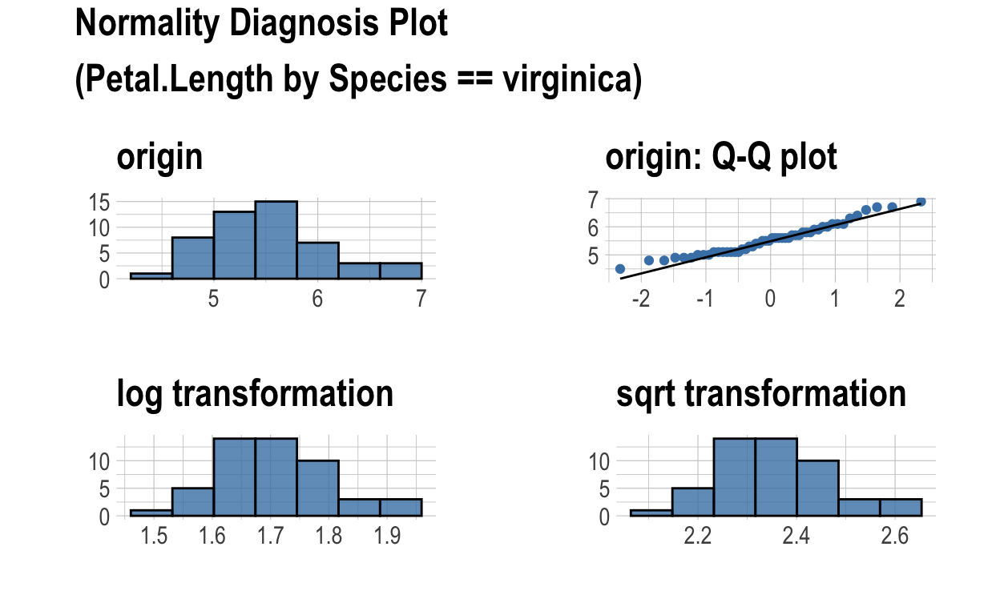
{moments}
Skewness
The symmetry can be described by two measures: skewness and kurtosis. They are useful, because significant skewness and kurtosis clearly indicate not-normally distributed data.
Skewness measures the lack of symmetry. A data is symmetric if it looks the same to the left and to the right of the central point. The skewness for a perfectly normal distribution is zero, so that any symmetric data should have a skewness near zero. Positive values for the skewness indicate data that are skewed to the right, which means that most of the data is actually on the left side of the plot, like on our Ozone plot. Negative values would then indicate skewness to the left, with most of data being on the right side of the plot. Using skewness() function from {moments} package shows that the skewness of Ozone is indeed positive and is far away from the zero, which suggests that Ozone is not-normally distributed.
General guidelines for the measure of skewness are following:
- if skewness is less than -1 or greater than 1, the distribution is highly skewed,
- if skewness is between -1 and -0.5 or between 0.5 and 1, the distribution is moderately skewed and
- if skewness is between -0.5 and 0.5, the distribution is approximately symmetric.
But here again, how far from zero would be far enough in order to say that data is significantly skewed and therefore not-normally distributed? Well, D’Agostino skewness test from {moments} package provides a p-value for that. For instance, a p-value for Ozone is small, which rejects the Null Hypothesis about not-skewed data, saying that Ozone data is actually significantly skewed. In contrast the p-value for Wind is above the usual significance threshold of 0.05, so that we can treat Wind data as not-skewed, and therefore - normal.
[1] 1.225681skewness(airquality$Wind, na.rm = T)
[1] 0.3443985agostino.test(airquality$Ozone)
D'Agostino skewness test
data: airquality$Ozone
skew = 1.2257, z = 4.6564, p-value = 3.219e-06
alternative hypothesis: data have a skewnessagostino.test(airquality$Wind)
D'Agostino skewness test
data: airquality$Wind
skew = 0.3444, z = 1.7720, p-value = 0.07639
alternative hypothesis: data have a skewnessKurtosis
Kurtosis is a measure of heavy tails, or outliers present in the distribution. The kurtosis value for a normal distribution is around three. Here again, we’d need to do a proper statistical test which will give us a p-value saying whether kurtosis result is significantly far away from three. {moments} package provides Anscombe-Glynn kurtosis test for that. For instance, Ozone has a Kurtosis value of 4.1 which is significantly far away from 3, indicating a not normally distributed data and probable presence of outliers. In contrast, the Kurtosis for Wind is around 3 and the p-value tells us that Wind distribution is fine.
anscombe.test(airquality$Ozone)
Anscombe-Glynn kurtosis test
data: airquality$Ozone
kurt = 4.1841, z = 2.2027, p-value = 0.02762
alternative hypothesis: kurtosis is not equal to 3anscombe.test(airquality$Wind)
Anscombe-Glynn kurtosis test
data: airquality$Wind
kurt = 3.0688, z = 0.4478, p-value = 0.6543
alternative hypothesis: kurtosis is not equal to 3Check the normality of distribution
Now, finally, the normality of the distribution itself can, and should be always checked. It’s useful, because it helps us to determine a correct statistical test. For instance, if the data is normally distributed, we should use parametric tests, like t-test or ANOVA. If, however, the data is not-normally distributed, we should use non-parametric tests, like Mann-Whitney or Kruskal-Wallis. So, the normality check is not just another strange statistical concept we need to learn, but it’s actually helpful.
There are two main ways to check the normality: using a Quantile-Quantile plot and using a proper statistical test. And, we need them both!
{DataExplorer}
{DataExplorer} package provides a simple and elegant plot_qq() function, which produces Quantile-Quantile plots either for all continuous variables in the dataset, or, even for every group of a categorical variable, if the argument by = is specified.

{dlookr} visualization
Cool, right? But plot_normality() function from {dlookr} package visualizes not only Quantile-Quantile plot, but also the histogram of the original data and histograms of two of the most common transformations of data, namely log & square root transformations, in case the normality assumption wasn’t met. This allows us to see, whether transformation actually improves something or not, because its not always the case. Here we could also use {dplyr} syntax in order to quickly visualize several groups.
iris %>%
group_by(Species) %>%
plot_normality(Petal.Length)
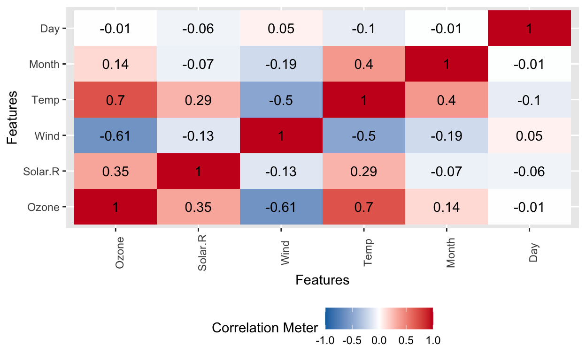

However, we still don’t know, when our data is normally distributed. The QQ-plot can be interpreted in following way: if points are situated close to the diagonal line, the data is probably normally distributed. But here we go again! How close is close enough? It’s actually very subjective! That is why, I like to explore QQ-plots using {ggpubr} package…(read on the next chapter)
{ggpubr}
… which goes one step further and shows confidence intervals, which help to decide whether the deviation from normality is big or not. For example, if all or most of the data fall into these confidence intervals, we can conclude that data is normally distributed. However, in order to to be sure, we’d need to actually do a statistical test, which is in most cases a Shapiro-Wilk Normality test.
{dlookr} Shapiro-Wilk normality tests
Very intuitive normality() function from {dlookr} package performs Shapiro-Wilk Normality test with every numeric variable in the dataset. For example, we have seen that variable Wind in airquality dataset has a nice skewness and kurtosis, so, it suppose to be normally distributed, while variable Ozone suppose to be not-normally distributed, right? And indeed, normality() function totally confirms that.
vars | statistic | p_value | sample |
Ozone | 0.879 | 0.000 | 153 |
Solar.R | 0.942 | 0.000 | 153 |
Wind | 0.986 | 0.118 | 153 |
Temp | 0.976 | 0.009 | 153 |
Month | 0.888 | 0.000 | 153 |
Day | 0.953 | 0.000 | 153 |
Moreover, via the collaboration with {dplyr} package and it’s group_by() function we can conduct around 2000 normality tests in seconds and only few lines of code:
# A tibble: 1,932 x 7
variable cut color clarity statistic p_value sample
<chr> <ord> <ord> <ord> <dbl> <dbl> <dbl>
1 carat Fair D I1 0.888 0.373 4
2 carat Fair D SI2 0.867 0.0000183 56
3 carat Fair D SI1 0.849 0.00000379 58
4 carat Fair D VS2 0.931 0.0920 25
5 carat Fair D VS1 0.973 0.893 5
6 carat Fair D VVS2 0.871 0.127 9
7 carat Fair D VVS1 0.931 0.493 3
8 carat Fair D IF 0.990 0.806 3
9 carat Fair E I1 0.941 0.596 9
10 carat Fair E SI2 0.867 0.000000807 78
# … with 1,922 more rowsSo, why don’t we just do our Shapiro-Wilk tests all the time and forget all those skewnesses and visualizations? Well, because given enough data, Shapiro-Wilk test will always find some non-normality even in perfectly symmetric bell-shaped data. Here is an example of a vector with less than 300 values, where Shapiro-Wilk test shows highly significant deviation from normality, while a density plot shows a bell curved data distribution. Moreover, tests or skewness, kurtosis and Quantile-Quantile plot all indicate normally distributed data. Thus, it’s always better to check several options before making a conclusion about normality of the data.
vars | statistic | p_value | sample |
age | 0.9855188 | 0.008259363 | 268 |
plot_density(bla)
agostino.test(bla$age)
D'Agostino skewness test
data: bla$age
skew = 0.24361, z = 1.64889, p-value = 0.09917
alternative hypothesis: data have a skewnessanscombe.test(bla$age)
Anscombe-Glynn kurtosis test
data: bla$age
kurt = 2.6282, z = -1.3503, p-value = 0.1769
alternative hypothesis: kurtosis is not equal to 3ggqqplot(bla$age)
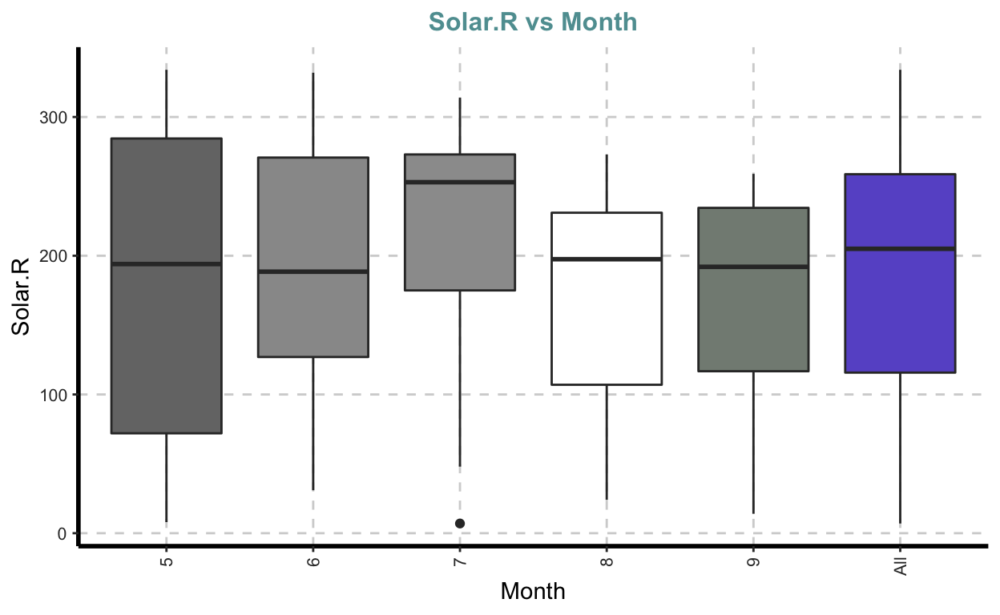
Explore categorical and numeric variables with Box-Plots
Box-plots help us to explore a combination of numeric and categorical variables. Put near each other, box-plots show whether distribution of several groups differ.
{DataExplorer}
For example, using the intuitive plot_boxplot() function from {DataExplorer} package with an argument by = which specifies a grouping, variable, will put all groups of all numeric variables into the boxes. Such exploration however immediately creates the next question - do these groups differ significantly? We can not tell that from just staring at the picture…
plot_boxplot(iris, by = "Species")
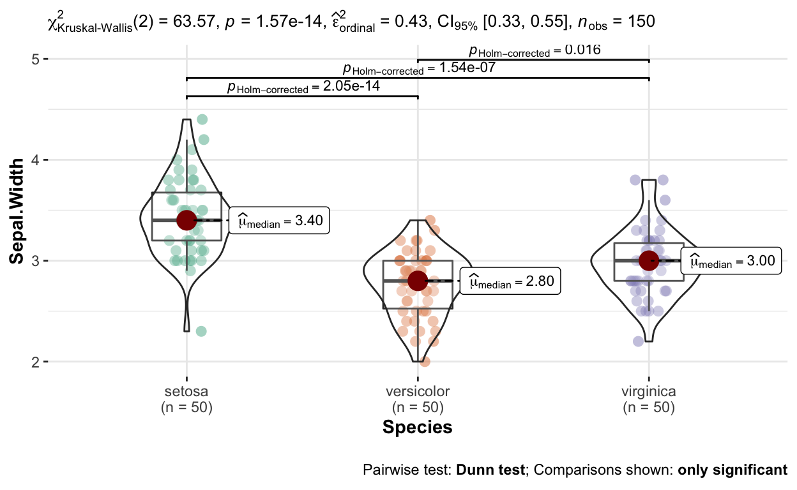
{ggstatsplot}
…but if we use a ggbetweenstats() function from {ggstatsplot} package, we’d check tons of hypothesis using only a few intuitive arguments. For instance:
- data
- x axis, where we determine the grouping categorical variable
- y axis, where we have our numeric variable of interest and
- the type of the test, which I would always set to non-parametric for exploratory analysis.
This simple code not only provides you with a p-value which tells you whether there are significant differences between groups, but also conducts a correct multiple pairwise comparisons to see between which groups exactly these differences are. ggbetweenstats() even adjusts the p-values for multiple comparisons with Holm method automatically and produces bunch of other statistical details on top of the amazing visualization. If fact, I found ggbetweenstats() function sooo useful, that I did two separate videos on it already.
ggbetweenstats(
data = iris,
x = Species,
y = Sepal.Length,
type = "np")
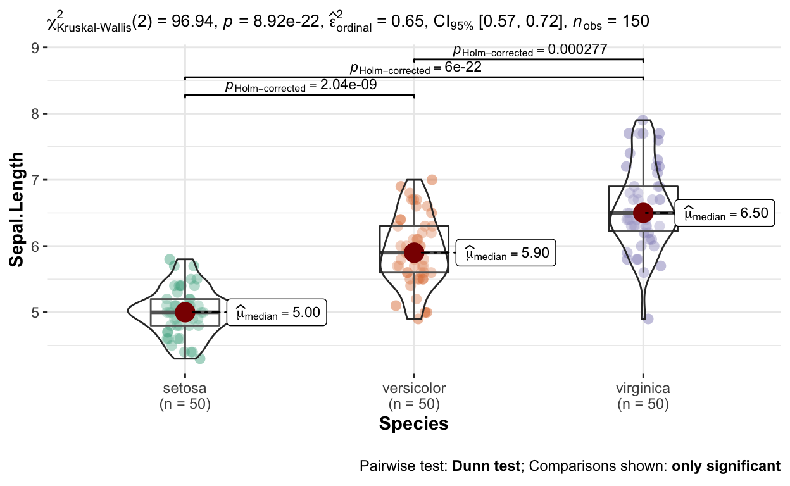
{SmartEDA}
The only useful thing here, compared to function provided above, is plotting of the whole variable near the the same variables splitted into groups.
Explore correlations
{dlookr} - correlation
In order to quickly check the relationship between numeric variables we can use correlate() function from {dlookr} package, which delivers correlation coefficients. If we don’t specify any target variable or the method, Pearson’s correlation between ALL variables will be calculated pairwisely.
{dlookr’s} plot_correlate() function is a bit more useful, because it visualizes these relationships. We can of course determine the method of calculations if we need to, be it a default “pearson”, or a non-parametric “kendall” or “spearman” correlations, which are more appropriate for not-normally or non-very-linearly distributed values with some outliers. The shape of each subplot shows the strength of the correlation, while the color shows the direction, where blue is positive and red is negative correlation. It’s fine for the pure exploratory analysis, but, as always, the next logical step would be to test hypothesis and figure out which correlations are significant.
correlate(airquality, Ozone)
# A tibble: 5 x 3
var1 var2 coef_corr
<fct> <fct> <dbl>
1 Ozone Solar.R 0.348
2 Ozone Wind -0.602
3 Ozone Temp 0.698
4 Ozone Month 0.165
5 Ozone Day -0.0132plot_correlate(airquality, method = "kendall")

diamonds %>%
filter(cut %in% c("Premium", "Ideal")) %>%
group_by(cut) %>%
plot_correlate()
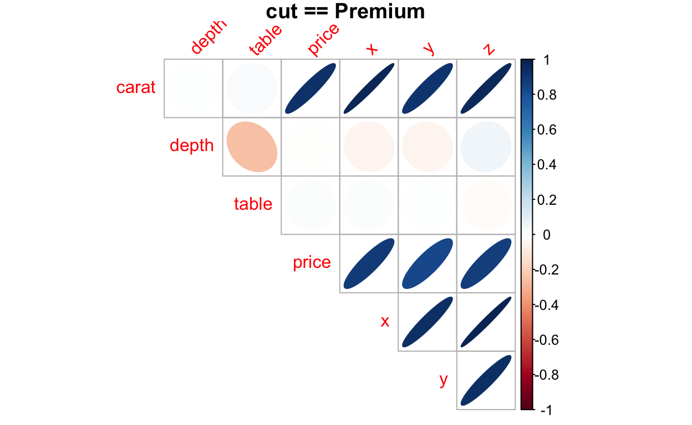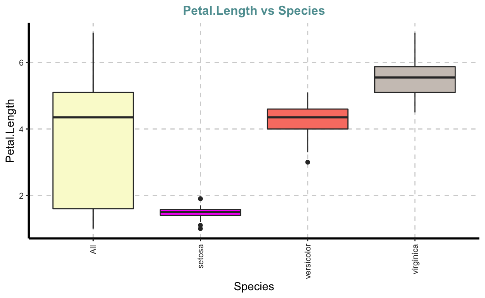
{ggstatsplot}
And that’s exactly what ggcorrmat() function from {ggstatsplot} package does! Namely, it displays:
- correlation coefficients,
- a colored heatmap showing positive or negative correlations, and, finally shows
- whether a particular correlation is significant or not, where not-significant correlations are simply crossed out.
Moreover, we can get the results in a table form with p-values and confidence intervals for correlation coefficients, if we want to, by simply using output = “dataframe” argument.
ggcorrmat(data = iris)
ggcorrmat(
data = iris,
type = "np",
output = "dataframe"
) %>%
mutate_if(is.numeric, ~round(., 2)) %>%
flextable()
parameter1 | parameter2 | estimate | conf.level | conf.low | conf.high | statistic | p.value | method | n.obs |
Sepal.Length | Sepal.Width | -0.17 | 0.95 | -0.32 | 0.00 | 656,283.26 | 0.04 | Spearman correlation | 150 |
Sepal.Length | Petal.Length | 0.88 | 0.95 | 0.84 | 0.91 | 66,429.35 | 0.00 | Spearman correlation | 150 |
Sepal.Length | Petal.Width | 0.83 | 0.95 | 0.78 | 0.88 | 93,208.42 | 0.00 | Spearman correlation | 150 |
Sepal.Width | Petal.Length | -0.31 | 0.95 | -0.45 | -0.15 | 736,637.00 | 0.00 | Spearman correlation | 150 |
Sepal.Width | Petal.Width | -0.29 | 0.95 | -0.43 | -0.13 | 725,048.13 | 0.00 | Spearman correlation | 150 |
Petal.Length | Petal.Width | 0.94 | 0.95 | 0.91 | 0.95 | 35,060.85 | 0.00 | Spearman correlation | 150 |
If any particular correlation catches your attention during the Exploratory Data Analysis, and you want to display it professionally, use the ggscatterstats() function from {ggstatsplot} package, which delivers statistical details, that matter, namely:
- the statterplot, which helps you to decide to go for a parametric, non-parametric or even robust correlation analysis, if needed,
- the correlation coefficient itself with the name of the method and 95% confidence intervals,
- the p-value of the correlation, and it even displays …
- the distribution of both numeric variables in different ways, for example densigram which combines a density plot and histogram, as you see on the current plot, or boxplot as you can see in the outcommented line.
So, you see, in just a few seconds we went from the exploration of our data to the publication ready plot with a tested hypothesis, namely: growing ozone concentration leads to a significant increase in temperature. Nice, right?
ggscatterstats(
data = airquality,
x = Ozone,
y = Temp,
type = "np" # try the "robust" correlation too! It might be even better here
#, marginal.type = "boxplot"
)
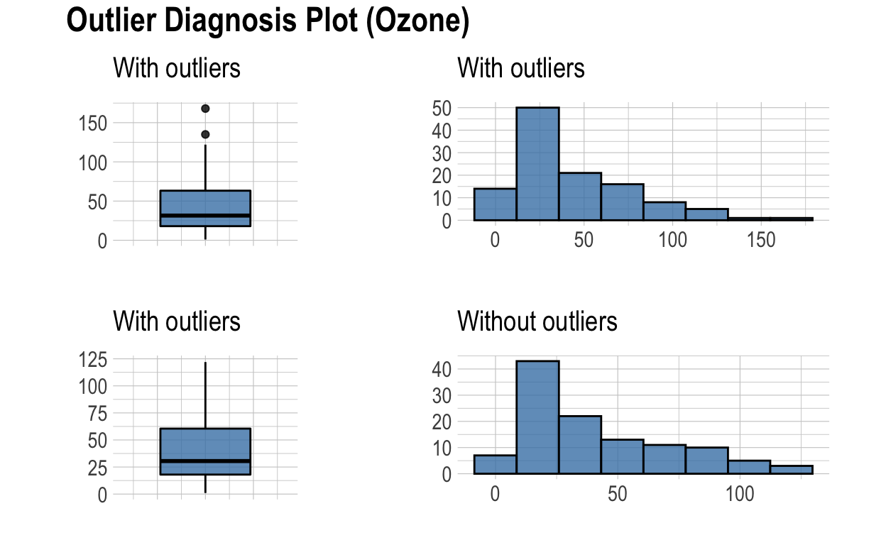
{PerformanceAnalytics}
Another effective way to conduct multiple correlation analysis is supported by the chart.Correlation() function from {PerformanceAnalytics} package. It displays not only
- correlation coefficients, but also
- histograms for every particular numeric variable, and
- scatterplots for every combination of numeric variables.
- Besides, significance stars are particularly helpful, because they describe the strength of correlation.
- Here we can of coarse also specify the method, we measure the correlation by.
library(PerformanceAnalytics)
chart.Correlation(iris %>% select(-Species), method = "kendall")

{fastStat}
If you don’t care about the distribution and the spread of data, but only need correlation coefficients and p-values, you can use cor_sig_star() function from {fastStat} package.
library(fastStat)
iris %>% select_if(is.numeric) %>% cor_sig_star(method = "kendall")
Sepal.Width Petal.Length Petal.Width
1 Sepal.Length -0.118(0.183) 0.872(0)*** 0.818(0)***
2 Sepal.Width -0.428(0.001)** -0.366(0.008)**
3 Petal.Length 0.963(0)***
4 Petal.Width{dlookr} - linear models
The compare_numeric()* function from {dlookr} package examines the relationship between numerical variables with the help of (Pearson’s) correlation and simple linear models. The correlation results are a little boring because they only provide correlation coefficients (therefore not shown). However, the results of pairwise linear regressions are interesting, because they not only produce p-values, but also other useful metrics, like \(R^2\), AIC etc. On top of this, we could plot all the results of compare_numeric() function, which would display:
- the strength of the correlation with circles,
- the spread of data with box-plots and
- the linear regression itself
bla <- compare_numeric(iris)
bla$linear %>%
mutate_if(is.numeric, ~round(.,2)) %>%
flextable()
var1 | var2 | r.squared | adj.r.squared | sigma | statistic | p.value | df | logLik | AIC | BIC | deviance | df.residual | nobs |
Sepal.Length | Sepal.Width | 0.01 | 0.01 | 0.83 | 2.07 | 0.15 | 1 | -183.00 | 371.99 | 381.02 | 100.76 | 148 | 150 |
Sepal.Length | Petal.Length | 0.76 | 0.76 | 0.41 | 468.55 | 0.00 | 1 | -77.02 | 160.04 | 169.07 | 24.53 | 148 | 150 |
Sepal.Length | Petal.Width | 0.67 | 0.67 | 0.48 | 299.17 | 0.00 | 1 | -101.11 | 208.22 | 217.25 | 33.81 | 148 | 150 |
Sepal.Width | Petal.Length | 0.18 | 0.18 | 0.40 | 33.28 | 0.00 | 1 | -72.57 | 151.13 | 160.16 | 23.11 | 148 | 150 |
Sepal.Width | Petal.Width | 0.13 | 0.13 | 0.41 | 22.91 | 0.00 | 1 | -76.98 | 159.96 | 169.00 | 24.51 | 148 | 150 |
Petal.Length | Petal.Width | 0.93 | 0.93 | 0.48 | 1,882.45 | 0.00 | 1 | -101.18 | 208.35 | 217.39 | 33.84 | 148 | 150 |
plot(bla)
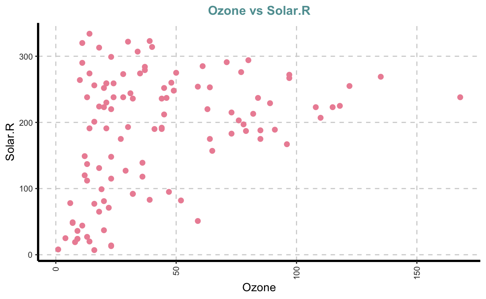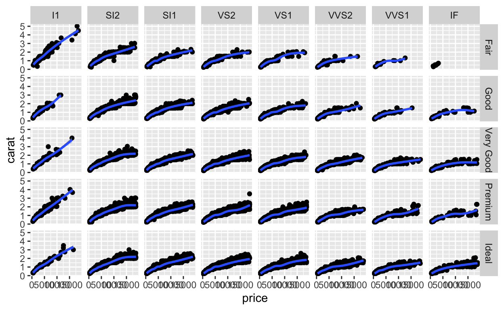


Exploratory modelling
However, how can we explore whether linear model makes any sense? Well, I think the easiest way is to plot the data with {ggplot2} package and use geom_smooth() function which always fits the data no matter what shape. Such exploration may point out the necessity to use non-linear models, like GAM or LOESS:
ggplot(airquality, aes(Solar.R, Temp))+
geom_point()+
geom_smooth()+
facet_wrap(~Month)

Explore missing values
I found this topic actually so cool, that I produced a small separate video of 7 minutes (and article):
{dlookr}
Here I’ll just give you two useful functions from {dlookr} package. The first one - plot_na_intersect() shows you which variables have missing values and how many. And the second function imputate_na() imputes missing values with different machine learning methods. For instance, using “K nearest neighbors” algorithm, we could impute 37 missing values in Ozone variable, and even visually check the quality of our imputation in only one line of code. Using the imputate_na() function, we only need to specify 4 arguments:
- the dataset
- the variable with missing values, that would Ozone
- the variable which will predict the missing values, for example Temperature and
- the imputation method

Explore outliers
{performance}
check_outliers() function from {performance} package provides an easy way to identify and visualize outliers with different methods. If you want to have an aggressive method and clean out a lot of outliers, go with the zscore method, but if you don’t have much data, go with less conservative method, for example interquartile range.
library(performance)
plot(check_outliers(airquality$Wind, method = "zscore"))

check_outliers(airquality$Wind, method = "iqr")
Warning: 3 outliers detected (cases 9, 18, 48).{dlookr}
diagnose_outlier() function from {dlookr} not only counts outliers in every variable using interquartile range method, but also gets their percentages. Moreover, it calculates three different averages: the mean of every variable with outliers, without outliers and the mean of the outliers themselves. In this way we can see how strong the influence of outliers for every variable actually is. For instance the variable “depth” in “diamonds” data has over 2500 outliers. That’s a lot! However, the means with and without outliers are almost identical. Besides, the average of the outliers themselves is very similar to the original average of the whole data. In contrast, the variable “price” with over 3500 outliers is heavily influenced by them. The average of the outliers is almost 5 times higher, than the average without them.
diagnose_outlier(diamonds) %>% flextable()
variables | outliers_cnt | outliers_ratio | outliers_mean | with_mean | without_mean |
carat | 1,889 | 3.50203930 | 2.153684 | 0.7979397 | 0.748738 |
depth | 2,545 | 4.71820541 | 61.204794 | 61.7494049 | 61.776373 |
table | 605 | 1.12161661 | 64.842975 | 57.4571839 | 57.373404 |
price | 3,538 | 6.55913978 | 14,944.776427 | 3,932.7997219 | 3,159.807111 |
x | 32 | 0.05932518 | 7.239375 | 5.7311572 | 5.730262 |
y | 29 | 0.05376344 | 9.773448 | 5.7345260 | 5.732353 |
z | 49 | 0.09084168 | 4.054694 | 3.5387338 | 3.538265 |
Besides, {dlookr} can visualize the distribution of data with and without outliers, and, thank to collaboration with {dplyr}, we could choose to visualize only variables with over 5% of values being outliers:
airquality %>%
dplyr::select(Ozone, Wind) %>%
plot_outlier()

# Visualize variables with a ratio of outliers greater than 5%
diamonds %>%
plot_outlier(diamonds %>%
diagnose_outlier() %>%
filter(outliers_ratio > 5) %>%
select(variables) %>%
pull())

Impute outliers
Similarly to imputate_na() function, {dlookr} package provides the imputate_outlier() function too, which allows us to impute outliers with several methods: mean, median, mode and cupping. The last one, “capping”, is the fanciest, and it imputes the upper outliers with 95th percentile, and the bottom outliers with 5th percentile. Wrapping a simple plot() command around our result, would give us the opportunity to check the quality of imputation.

Conclusion
So, the usual Exploratory Data Analysis allows us to have a look at the data and form the hypothesis. In this post we not only did that, but also went one step further and started to explore (or test) the hypotheses themselves with simple statistical tests. This can help us to decide which complex statistics we need to use next, in order to produce the final result, for example inference and predictions from a multivariate model, which would be a completely new story…
If you think, I missed something, please comment on it, and I’ll improve this tutorial.
Thank you for learning!
Further readings and references
- here is an amazing paper, which describes the most used EDA packages in R: https://www.groundai.com/project/the-landscape-of-r-packages-for-automated-exploratory-data-analysis/1